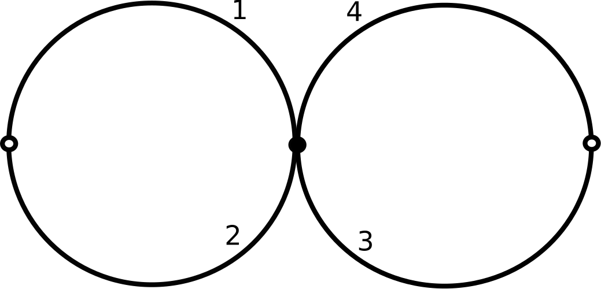

2. Trazado de Caras
El algoritmo combinatorio
El Algoritmo de Trazado de Caras
Para determinar las caras de un encaje celular dado por un sistema de rotación \((\sigma, \rho)\), utilizamos el algoritmo de trazado de caras (Face Tracing). Este procedimiento nos permite identificar los ciclos de semiaristas que conforman los bordes de las caras.
La Permutación de Caras \(\varphi\)
En la convención de SageMath para ribbon graphs, las caras están determinadas por las órbitas de la permutación \(\varphi\), definida como:
\[ \varphi = \rho \sigma \]
Esta es la fórmula utilizada internamente por el método boundary() de la clase RibbonGraph en Sage.
En este curso y en SageMath, la multiplicación de permutaciones se lee de izquierda a derecha. La expresión \(\varphi = \rho \sigma\) significa: primero aplicamos \(\rho\) (cruzar la arista) y luego aplicamos \(\sigma\) (girar en el vértice en el orden dado).
Algunos textos usan \(\varphi = \rho \sigma^{-1}\), \(\varphi = \sigma^{-1} \rho\), o \(\varphi = (\sigma\rho)^{-1}\). Todas estas convenciones dan el mismo número de caras, pero los ciclos específicos pueden diferir. Usamos \(\varphi = \rho \sigma\) para coincidir exactamente con la implementación de SageMath y simplificar los cálculos (no hay que invertir σ).
La Receta Geométrica: Cruzar y Girar
El cálculo de \(\varphi(d)\) para una semiarista \(d\) sigue estos pasos geométricos:
- Cruzar la arista: Desde \(d\), vamos al otro extremo de la arista aplicando \(\rho\).
- Girar en el vértice: En el nuevo vértice, tomamos la siguiente semiarista según el orden de rotación \(\sigma\).
Esto corresponde a recorrer el borde de la cara siguiendo la orientación dada por el ribbon graph.
Ejemplo: Un vértice, dos lazos
Consideremos el grafo con un vértice y dos lazos (aristas que empiezan y terminan en el mismo vértice). Tenemos 4 semiaristas: \(D = \{1, 2, 3, 4\}\). La permutación de aristas es fija: \(\rho = (1, 2)(3, 4)\).

Vamos a calcular las caras para dos elecciones distintas de \(\sigma\), mostrando cómo el orden cíclico afecta la topología.
Caso A: Encaje en la Esfera (\(g=0\))
Elegimos el orden cíclico natural: \[ \sigma = (1, 2, 3, 4) \]
Calculamos \(\varphi = \rho \sigma\):
- Paso a paso (Cruzar \(\to\) Girar):
- \(1 \xrightarrow{\rho} 2 \xrightarrow{\sigma} 3\). (Sigue \(1 \to 3\))
- \(3 \xrightarrow{\rho} 4 \xrightarrow{\sigma} 1\). (Cierra el ciclo \((1, 3)\))
- \(2 \xrightarrow{\rho} 1 \xrightarrow{\sigma} 2\). (Ciclo cerrado \((2)\))
- \(4 \xrightarrow{\rho} 3 \xrightarrow{\sigma} 4\). (Ciclo cerrado \((4)\))
Resultado: \(\varphi = (1, 3)(2)(4)\). Tenemos \(F=3\) caras (Roja, Verde, Azul).


sigma = PermutationGroupElement('(1,2,3,4)')
rho = PermutationGroupElement('(1,2)(3,4)')
phi = rho * sigma # φ = ρσ
print(phi) # (1,3)
print(phi.cycle_tuples(singletons=True)) # [(1, 3), (2,), (4,)]
R = RibbonGraph(sigma, rho)
print(R.boundary()) # [[1, 2, 3, 4], [2, 1], [4, 3]]
print(R.number_boundaries()) # 3Caso B: Encaje en el Toro (\(g=1\))
Cambiamos el orden cíclico intercalando las semiaristas: \[ \sigma = (1, 3, 2, 4) \]
Calculamos \(\varphi = \rho \sigma\):
- Paso a paso (Cruzar \(\to\) Girar):
- \(1 \xrightarrow{\rho} 2 \xrightarrow{\sigma} 4\).
- \(4 \xrightarrow{\rho} 3 \xrightarrow{\sigma} 2\).
- \(2 \xrightarrow{\rho} 1 \xrightarrow{\sigma} 3\).
- \(3 \xrightarrow{\rho} 4 \xrightarrow{\sigma} 1\).
Resultado: \(\varphi = (1, 4, 2, 3)\). Tenemos \(F=1\) cara (Morada).

sigma = PermutationGroupElement('(1,3,2,4)')
rho = PermutationGroupElement('(1,2)(3,4)')
phi = rho * sigma # φ = ρσ
print(phi) # (1,4,2,3)
print(phi.cycle_tuples(singletons=True)) # [(1, 4, 2, 3)]
R = RibbonGraph(sigma, rho)
print(R.boundary()) # [[1, 2, 4, 3, 2, 1, 3, 4]]
print(R.number_boundaries()) # 1Este encaje produce un toro (género 1, con una componente de frontera). ¡Una simple transposición en el orden de las semiaristas alrededor del vértice transformó la superficie de tres componentes disjuntas a un toro!
Propiedad Fundamental
El conjunto de órbitas (ciclos disjuntos) de la permutación \(\varphi\) es exactamente el conjunto de caras del encaje.
\[ F = \text{número de ciclos de } \varphi \]
Ejercicios
Toma el sistema de rotación:
- \(\sigma = (1,2)(3,4)(5,6)\)
- \(\rho = (1,2)(3,4)(5,6)\)
Calcula manualmente la permutación de caras \(\varphi = \rho\sigma\) y determina cuántas caras tiene este encaje.
Considera el bouquet de 3 círculos: un vértice con 3 self-loops (6 semiaristas). \(\rho\) está fijo como \((1,2)(3,4)(5,6)\).
- Usa el visualizador para probar diferentes permutaciones \(\sigma\) (por ejemplo, \((1,2,3,4,5,6)\) vs \((1,6,2,5,3,4)\)).
- Observa cómo cambia la conectividad de las cintas azules.
- ¿Puedes encontrar un \(\sigma\) que produzca una superficie con solo 1 cara?
Escribe un script en SageMath para verificar la fórmula de las caras:
- Define un conjunto de semiaristas \(D = \{1, \dots, 20\}\).
- Define un \(\rho\) fijo (ej.
(1,2)(3,4)...(19,20)). - Genera un \(\sigma\) aleatorio usando
SymmetricGroup(20).random_element(). - Calcula el número de ciclos de \(\varphi = \rho\sigma\).
- Compara este resultado con
RibbonGraph(sigma, rho).number_boundaries().
Reto: Ejecuta este experimento 100 veces en un bucle. ¿Cuál es el número mínimo y máximo de caras que observas?
Resumen
- El Algoritmo de Trazado de Caras permite identificar las regiones del encaje mediante recorridos en el grafo.
- La permutación de caras se define como \(\varphi = \rho \sigma\) (convención de SageMath).
- La regla geométrica es “Cruzar y Girar”: aplicar \(\rho\) y luego \(\sigma\).
- El número de caras \(F\) es exactamente el número de ciclos disjuntos de \(\varphi\).
- El orden cíclico \(\sigma\) determina la topología de la superficie (ej. Esfera vs. Toro).
En el siguiente capítulo utilizaremos este conteo de caras para calcular los invariantes topológicos (característica de Euler y género) directamente desde las permutaciones.